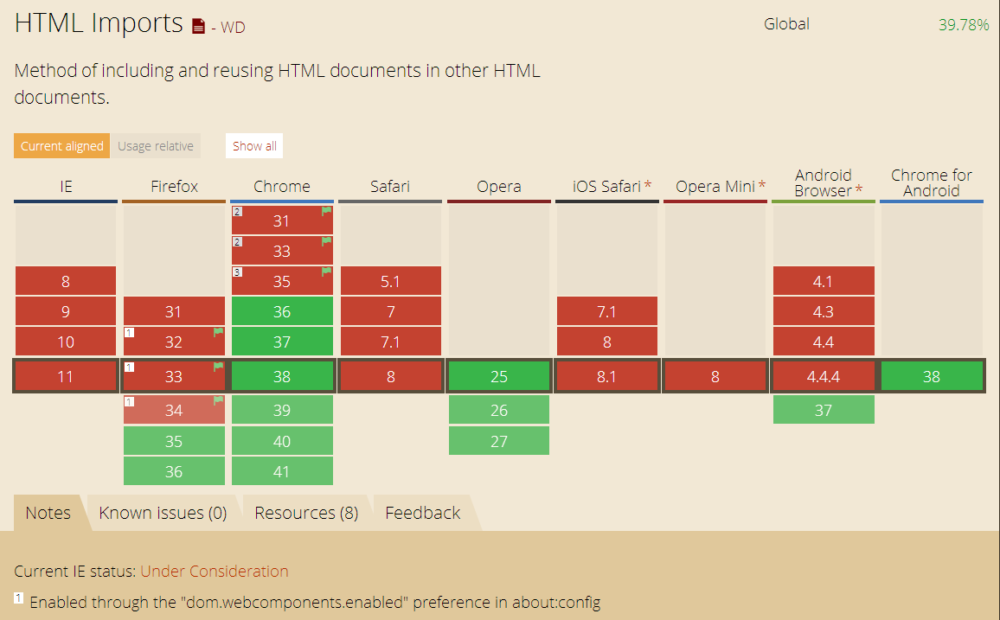
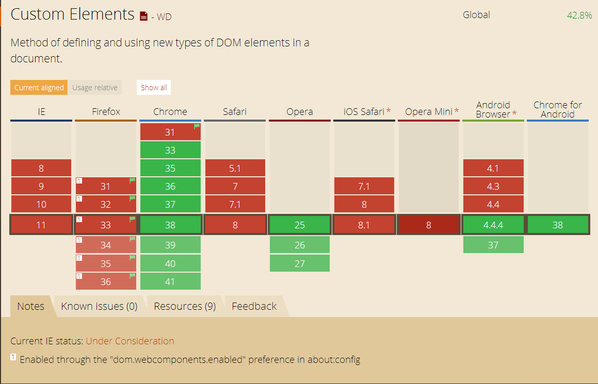

Web Components
A revolution ?
Why components ?
- This is the way we already do it
- For widgets ? applications ? pluggins ?
- Reusable
- Encapsulated
- Extendable
What is it ?
4 specifications
- Html Import
- Shadow Dom
- Template
- Custom Element
Html Import

What is it ?
Include an HTML element inside another one
How ?
- CORS
- Load once
- Don't block page parsing
Get the content
HTML and CSS are just loaded but not included (available) We retrieve the content using the import property
And for Javascript ...
- Run in the page context
- Can access to its DOM ...
- ... and the one from the page
Events
Load and Error Event
Support
Shadow Dom

Old !!!!
Browsers already use it
What is it ?
It's all about Encapsulation
What does this mean
- Isolated container
- New kind of node
- shadow root
- shadow host
With Javascript
- createShadowRoot
- element.shadowRoot
Shadow DOM versus Light DOM
Hello
- visible sub-tree (childNodes, children, innerHTML ...)
- internal node
- composed DOM: what the browser see and render
Insertions points
- Define render area in the shadow dom
- No logical link
Hello too
Bla Bla Bla
Hello too
Bla Bla Bla
Support

Template

What is it ?
Reusable DOM template
Not in the document
No side effect
- DOM not rendered
- Script not parsed
- Image not loaded
Usage
- Get the template with a selector
- acces to the content with the content property
- clone: he's alive
- insert the clone element in the page
Exemple

Support

Custom element

What is it ?
- Define new HTML element
- Extend existing elements
How ?
- registerElement
- a name (with a -)
- a prototype (HTMLElement by default)
Extend existing elements
Lifecycle
Declaration vs register
- Seen as unresolved
- pseudo-selector :unresolved
register
Callback
- createdCallback
- attachedCallback
- detachedCallback
- attributeChangedCallback
var myElemtProto = Object.create(HTMLElement.prototype);
myElemtProto.createdCallback = function() {};
var myElemt = document.registerElement('my-element', myElemtProto);
Add content
innerHTML
myEltProto.createdCallback = function() {
this.innerHTML = "un peu de contenu!";
};
shadowDom
myEltProto.createdCallback = function() {
var shadow = this.createShadowRoot();
shadow.innerHTML = "un peu de contenu!";
};
Template
myEltProto.createdCallback = function() {
var t = document.querySelector('#sdtemplate');
var clone = document.importNode(t.content, true);
this.createShadowRoot().appendChild(clone);
};
Add code
The prototype
myEltProto.myFctn=function(){...}
Object.defineProperty(myEltProto, "bar", {value: 5});
Support
And so what ?
Real good specification
Can be used alone
But a weak support
So what can we do ?
POLYMER

- polyfills (platform.js)
- components (core-elements, paper-elements)
- sugaring (polymer.js)
X-TAG

- Web Components Polyfills (custom element et HTMLImports)
- X-Tag Custom Elements
- X-Tag Core Library
BOSONIC
- polyfills (platform.js)
- components
Ressources
- Import
- Shadow Dom
- Styling Shadow Dom
- Template
- Custom Elements
- The Web Component Ecosystem
- Polymer
- X-Tag
- Bosonic
Credits: Eric Bidelman,Rob Dodson,Dominic Cooney